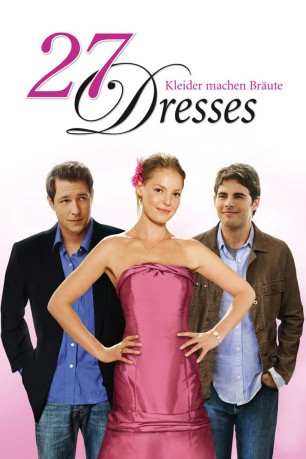
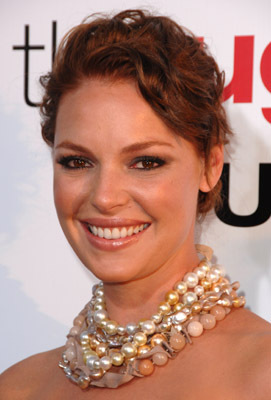
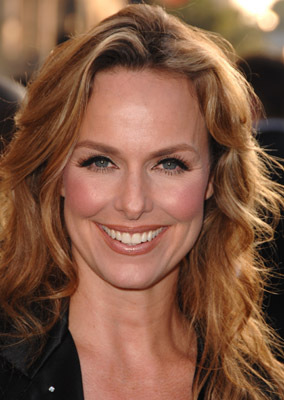
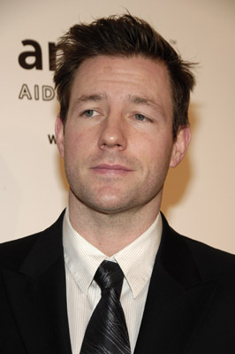
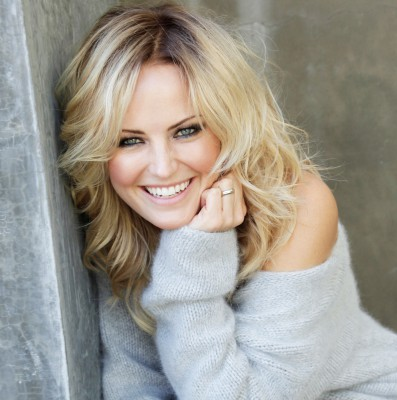
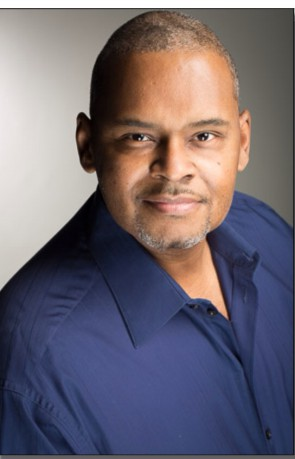
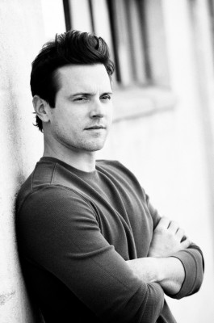
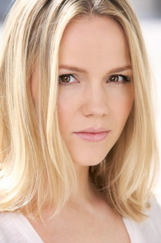
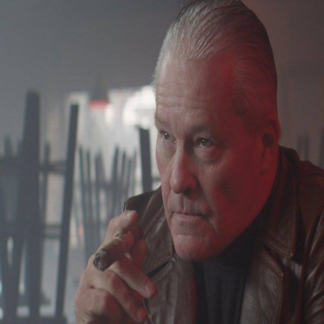

#1537 27 Dresses
 
 IMDB-Wertung: 6.1 / 10
IMDB-Wertung: 6.1 / 10  Metascore: 47
Metascore: 47 
Die beruflich erfolgreiche Jane Nichols war bereits auf 27 Hochzeiten ihrer Freundinnen als Brautjungfer und Organisatorin. In ihrem eigenen Leben hingegen gibt es keinen Mann. An einem Abend, an dem Jane zwischen zwei Hochzeiten pendelt, wird der Zeitungsreporter Kevin auf sie aufmerksam.
Jahr: 2008
Dauer: 111 Minuten
FSK: 0
Land: USA Studio: Fox 2000 PicturesTonspuren:
Untertitel: Deutsch,
Auflösung: 720p (1280x720) Größe: 4188 MB
Genre: Komödie, Liebe
Regisseur: Anne Fletcher
Drehbuch: Aline Brosh McKenna
Soundtrack: Randy Edelman
Darsteller:
- Brian Kerwin als Hal
 Peyton List als Young Jane
Peyton List als Young Jane-  Katherine Heigl als Jane
- Jennifer Lim als Bridal Salesgirl #1
- Brigitte Bourdeau als Salesgirl Olga
 Judy Greer als Casey
Judy Greer als Casey- Danielle Skraastad als Bride Suzanne
 James Marsden als Kevin
James Marsden als Kevin- Michael Paul als Taxi Driver Khaleel
- Yetta Gottesman als Hip Bridesmaid
- Erin Fogel als Shari Rabinowitz
- Bern Cohen als Rabbi
- Laksh Singh als Hindu Priest
- Maulik Pancholy als Trent
- Krysten Ritter als Gina the Goth
-  Melora Hardin als Maureen
-  Edward Burns als George
-  Malin Akerman als Tess
- Lyralen Kaye als Yoga Instructor
 Ronald Guttman als Antoine
Ronald Guttman als Antoine-  Ron Simons als Boathouse Chef
 Robert Clohessy als Dive Bartender
Robert Clohessy als Dive Bartender-  Michael Mosley als Bar Dude
- Ellen H. Schwartz als Diner Waitress #2
- Jennifer Bassey als Jane's Aunt
-  Alexa Havins als Boat Bride
- Richard O'Rourke als Jane's Minister
- Alecia Batson als Scuba Bride , uncredited
 Eric Bruno Borgman als Best Man , uncredited
Eric Bruno Borgman als Best Man , uncredited- Jackie Brown als Pedestrian , uncredited
- Susan Buttrick als Wedding Photographer , uncredited
 Kevin Cannon als New Yorker , uncredited
Kevin Cannon als New Yorker , uncredited-  Sean Collins als Father of Bride , uncredited
- Michael Anthony Coppola als Maitre 'd , uncredited
- Jeff DuJardin als Waiter , uncredited
 Elli als Rabbi , uncredited
Elli als Rabbi , uncredited- Liz Eng als Asian Bride , uncredited
- Jennifer Engle als Office Worker / Wedding Guest , uncredited
- Monica Farrington als Mariella , uncredited
- Steve Flynn als Wedding Guest , uncredited
- Alexa Gerasimovich als Flower Girl , uncredited
- Barbara Guertin als Rehearsal Dinner Guest , uncredited
- Dean H. Huh als Jane's Wedding Guest , uncredited
- Nick Jandl als Scuba Best Man , uncredited
- Lynn L'Heureux als Pedestrian , uncredited
- Tarek Moussa als Wedding Guest , uncredited
- Sarah Nicklin als Gothic Waitress , uncredited
- James Ryen als Wedding Guest , uncredited
- Jonathan Sawicki als Wedding Goth , uncredited
- Jennifer Shoup als Wedding Guest , uncredited
Datei: X:\2008(A-F)\27 Dresses (2008, FSKo.Al., 1280x720).mkv seit 14.07.2015
Festplatte: HD 2007(A-Z)-2008(A-F)
 Es gibt insgesamt 66 Filme in der Gruppe '2008(A-F)'
Es gibt insgesamt 66 Filme in der Gruppe '2008(A-F)'